Cotizaciones, facturas mensuales, registro de pagos (completos o abonos), retiros y reportes de cartera.
Para administradores de la empresa de transporteVersión noviembre 2026
Contenido
Cómo funciona el cobro en RutaRola Conceptos clave
Cotizaciones Ofrecer el servicio y convertirlo en facturas
Facturas El contrato mensual de cada estudiante
Estado de cuenta y retiros Mes a mes
Recibos de pago Pagos completos y abonos
Reportes financieros Ingresos, pendientes y morosos
Descargar PDF Facturas, recibos y cotizaciones
Preguntas frecuentes
¿Cómo leer este manual?
Menús: Finanzas › Facturas. Botones: Nueva factura. Campos: negrita. Los campos con * son obligatorios.
1. Cómo funciona el cobro en RutaRola
El flujo normal es: cotización (opcional) → factura (contrato por estudiante) → recibos (cada pago) → reportes (quién debe y cuánto).
Concepto
Qué significa
Factura
El contrato del servicio de un estudiante: un valor mensual que se cobra desde un mes inicial hasta un mes final. Ej.: $420.000 de febrero a noviembre = 10 cuotas.
Cuota
Cada mes que cobra la factura. Está Pagada solo cuando los recibos cubren todo su valor.
Fecha límite
El día del mes en que vence cada cuota. Por defecto el día 5; se cambia por factura en la programación de facturación o para toda la empresa en Configuración.
Recibo
Un pago recibido. Puede pagar uno o varios meses completos, o ser un abono parcial.
Retiro
El mes desde el cual el estudiante deja el servicio: desde ese mes ya no se cobra.
Ejemplo de abonoSi la cuota de noviembre es de $230.000 y el acudiente paga $130.000, noviembre queda pendiente con saldo de $100.000. Cuando pague los $100.000 restantes, noviembre quedará pagada.
2. Cotizaciones
Úsalas para ofrecer el servicio a una familia antes de contratar. Entra a Finanzas › Cotizaciones.
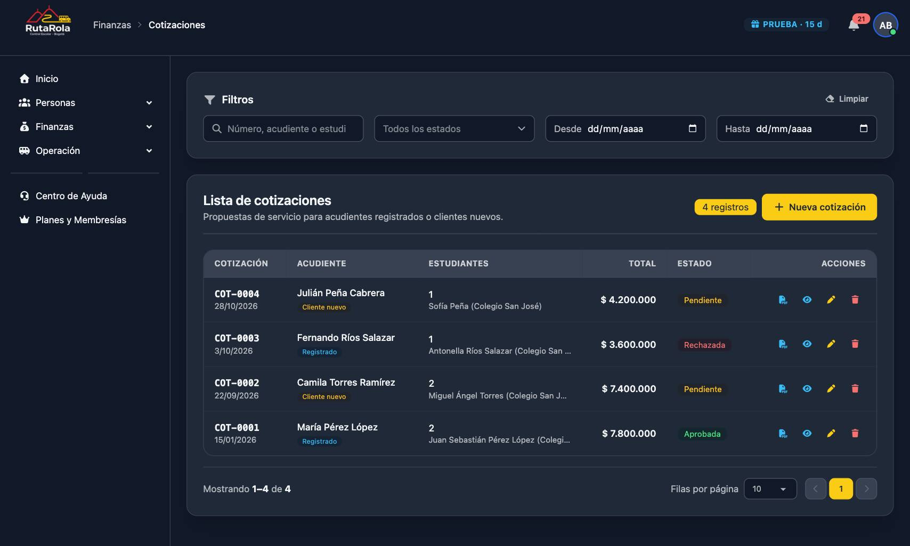
Lista de cotizaciones con su estado.
Crear una cotización
Toca Nueva cotización.
Cliente: indica si el acudiente y el estudiante ya están registrados (eliges el Acudiente) o si es un cliente nuevo (escribes su nombre y teléfono).
Servicio: elige el Mes inicial del servicio y el Mes final del servicio.
Estudiantes a cotizar: agrega cada estudiante con su colegio y su valor mensual, y toca Agregar. Repite para cada hermano. El sistema suma el valor mensual, cuenta los meses y calcula el valor total.
Seguimiento: la Fecha, el Estado (Pendiente, Aprobada o Rechazada) y observaciones.
Toca Registrar cotización.
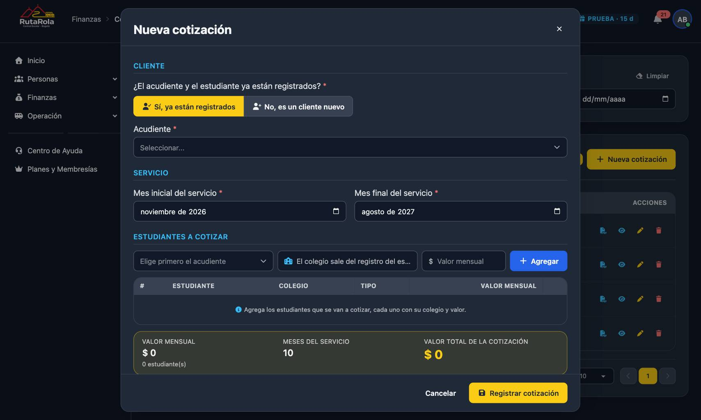
Formulario de nueva cotización.
Enviarla y convertirla en facturas
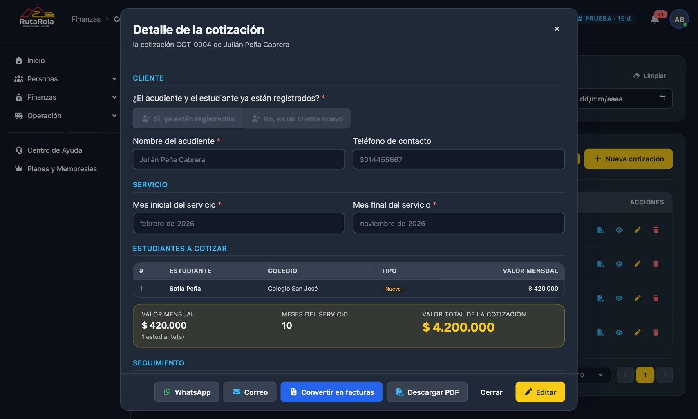
Al consultarla: WhatsApp, Correo, Convertir en facturas y Descargar PDF.
Abre la cotización tocando su fila.
Toca WhatsApp o Correo para enviársela al cliente con el mensaje ya escrito, o Descargar PDF para adjuntarla.
Cuando el cliente acepte, toca Convertir en facturas: la cotización queda Aprobada y se crea una factura vigente por cada estudiante, con su valor y meses.
RequisitoPara convertirla en facturas, el acudiente y los estudiantes deben estar registrados. Si era un cliente nuevo, regístralos primero en Personas y edita la cotización para elegirlos. Una cotización ya facturada no se puede editar ni eliminar.
3. Facturas
Entra a Finanzas › Facturas. Cada fila es el contrato de un estudiante.
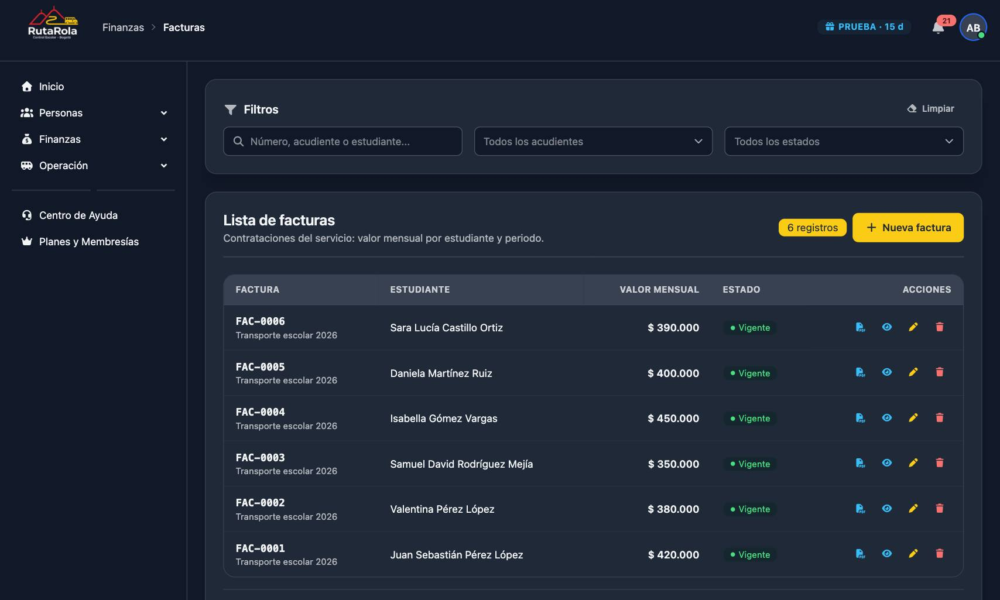
Lista de facturas.
Crear una factura
Toca Nueva factura (o desde Inicio).
Contratante: elige primero el Acudiente y luego el Estudiante: solo aparecen los estudiantes de ese acudiente.
Contratación: escribe el Valor de la contratación (mensual), el Concepto (ej. “Transporte escolar 2026”) y elige el Mes inicial del servicio y el Mes final del servicio. El total del contrato se calcula solo (meses × valor).
Emisión: la Fecha de emisión, el Estado (Vigente) y observaciones.
Toca Registrar factura. El número (FAC-0001, FAC-0002…) lo pone el sistema.
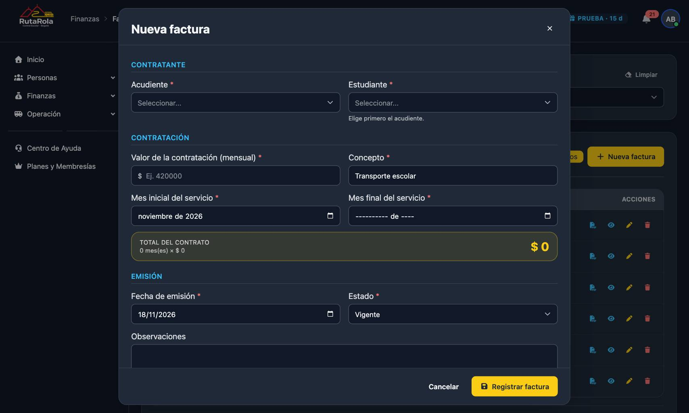
Formulario de nueva factura.
ReglasUn estudiante no puede tener dos facturas vigentes que se crucen en los mismos meses. Para cancelar una factura se cambia su estado a Anulada: deja de generar cuotas y de aparecer en la cartera.
Siguiente pasoPara que RutaRola le recuerde el pago al acudiente cada mes, crea su programación (ver el manual Programación de facturación).
4. Estado de cuenta y retiros
Al consultar una factura, abajo aparece su estado de cuenta: el total, lo pagado, el saldo y cada mes con su fecha límite, lo pagado, el saldo y su estado (Pagada, Vencida, Pendiente).
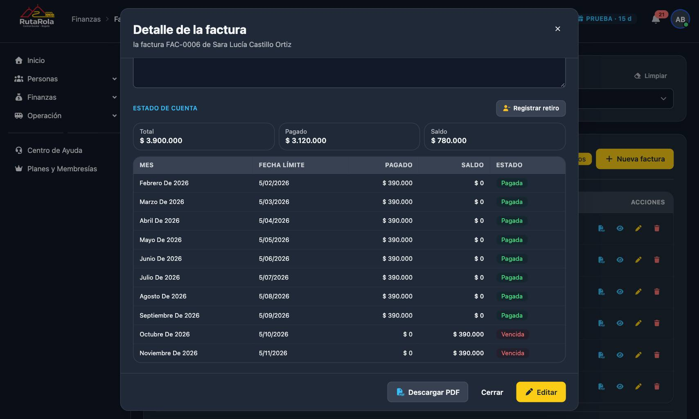
Estado de cuenta de una factura.
Registrar el retiro de un estudiante
Abre la factura y en el estado de cuenta toca Registrar retiro.
Elige el mes de retiro (desde ese mes ya no se cobra) y escribe el motivo.
Guarda. Los meses desde el retiro desaparecen de la cartera y de los recordatorios.
AutomáticoSi inactivas al estudiante o al acudiente, el retiro se registra solo desde el mes siguiente. No se puede retirar desde el primer mes ni desde un mes que ya tiene pagos; para quitar un retiro, déjalo vacío.
5. Recibos de pago
Cada vez que un acudiente paga, regístralo en Finanzas › Recibos con Registrar pago (también está en Inicio).
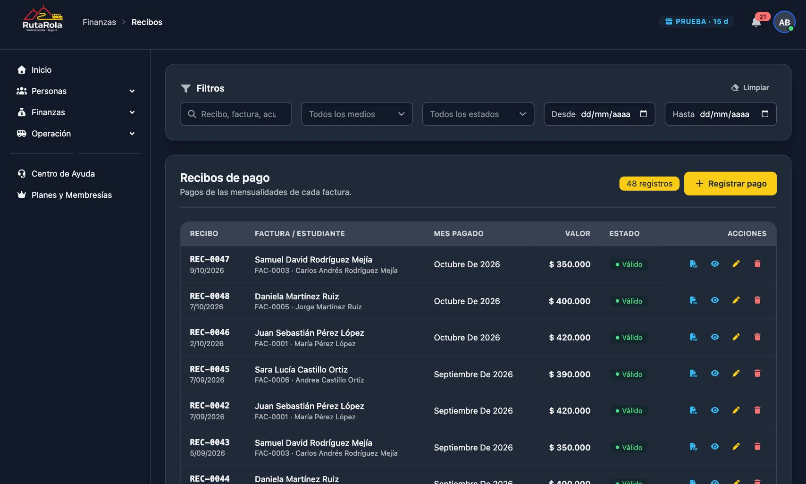
Lista de recibos.
Elige la factura. Arriba verás el acudiente, el estudiante, el valor mensual y el saldo de la factura con los meses ya pagados.
En ¿Cómo se aplica el pago? elige:
Pagar meses: marcas uno o varios meses con saldo. Elegir vencidos y del mes los marca de una vez.
Abonar al saldo de la factura: el valor se aplica solo a los meses más antiguos con saldo.
Escribe el Valor pagado (se sugiere el saldo de los meses elegidos) y la Fecha de pago.
Lee el mensaje verde o amarillo: te dice qué meses quedan cancelados y, si el valor no alcanza, cuánto queda como abono y qué sigue pendiente.
Elige el Medio de pago (efectivo, Nequi, transferencia…), escribe la Referencia / comprobante si la hay y toca Registrar pago.
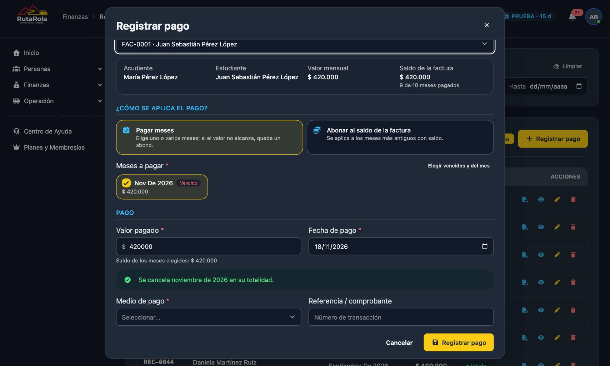
Registrar pago: meses a pagar y resumen de cómo se aplica.
Lo que el sistema no permitePagar más que el saldo de la factura, o pagar un mes que ya está pagado. Si un recibo se registró mal, edítalo y cámbialo a Anulado: deja de contar y el mes vuelve a quedar pendiente.
6. Reportes financieros
En Finanzas › Reportes financieros hay tres reportes. Todos se pueden filtrar y exportar a Excel con Exportar CSV.
Ingresos
Lo recaudado entre dos fechas: total, número de recibos, promedio y una gráfica por mes.
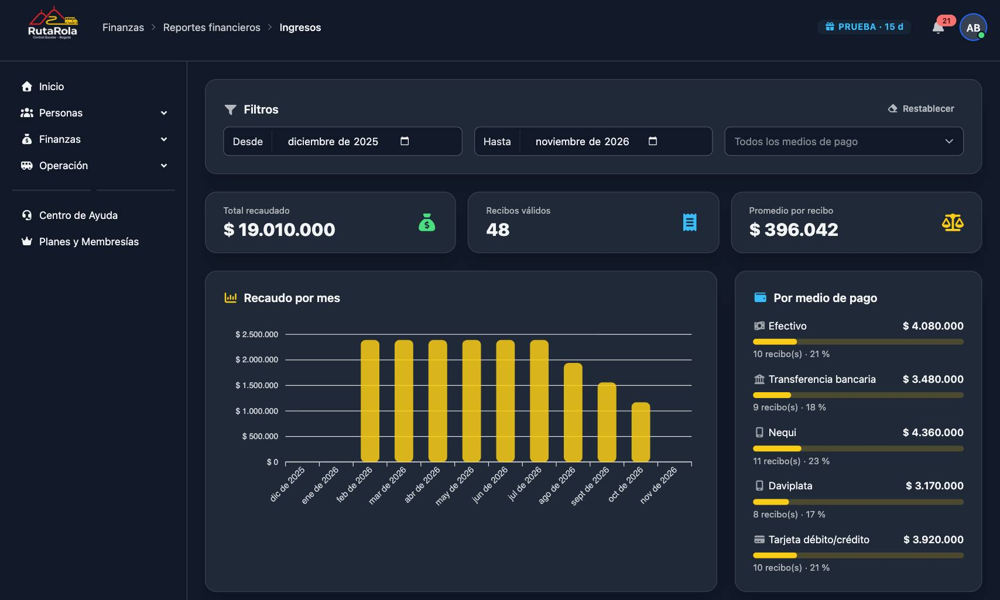
Reporte de ingresos.
Facturas pendientes
Cada cuota sin pagar hasta el mes en curso, separando las vencidas de las que están por vencer. Desde ahí mismo puedes registrar el pago.
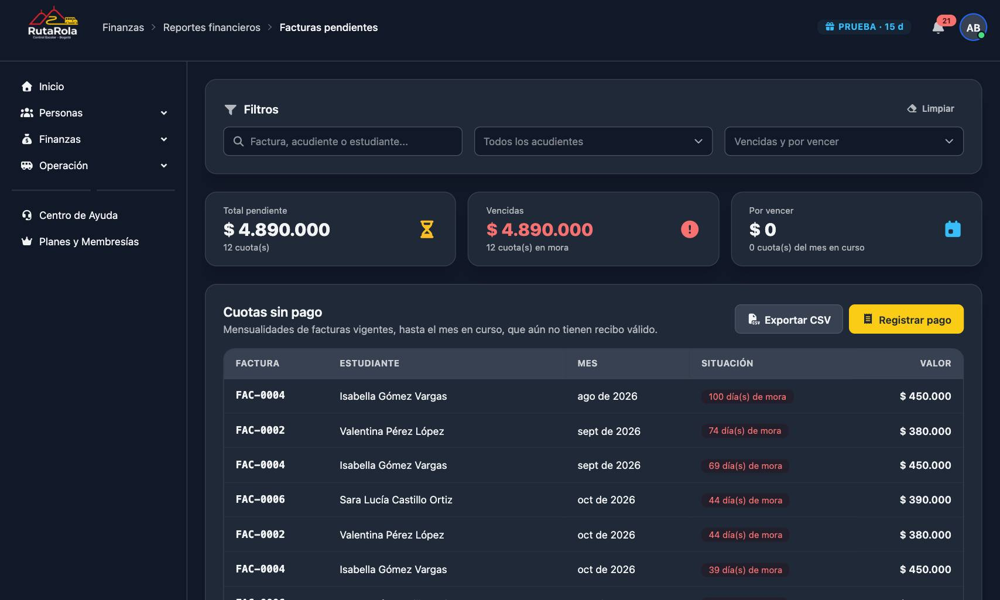
Cuotas sin pago.
Morosos
Los acudientes con al menos una cuota vencida, ordenados por días de mora, con lo que deben y botones para contactarlos.
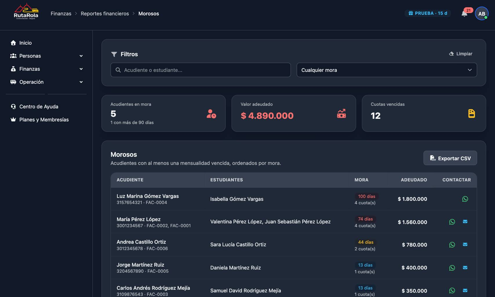
Acudientes en mora.
7. Descargar PDF
En las tablas de facturas, recibos y cotizaciones, el icono de PDF genera el documento con tu logo y tus datos; también está el botón Descargar PDF al consultar. Se abre la ventana de impresión: elige “Guardar como PDF” para guardarlo o imprímelo directamente.
El aspecto de los PDF (logo, nombre comercial, color, notas al pie) se configura en Configuración › Documentos PDF.
8. Preguntas frecuentes
No aparece el estudiante al crear la factura
Primero elige el acudiente: solo se listan sus estudiantes. Si no está, revisa en Personas › Estudiantes que tenga ese acudiente.
“Ya existe una factura vigente que se cruza”
El estudiante ya tiene una factura para alguno de esos meses. Ajusta los meses o anula la factura anterior.
“El mes ya está pagado”
Elige otro mes o usa Abonar al saldo. Revisa el estado de cuenta de la factura para ver qué falta.
¿Por qué el recaudo del mes está en $0?
El tablero de Inicio cuenta lo que los recibos aplicaron al mes en curso. Al comienzo del mes es normal que esté bajo; compáralo con el mes anterior que aparece debajo.